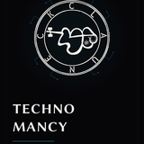

TECNOMANCIA: Tratado Completo de Magia, Código y Máquina
Casi todos los libros de magia te piden que creas. Este te pide que lo ejecutes, registres el resultado y te pilles haciendo trampa.
$9.99 USD
¿Quieres los 10 libros?
El bundle completo son $29.99 (56% menos que los $68.92 comprados por separado). Este título está incluido.
Consigue el pack — $29.99 →Qué hace el libro, exactamente
399 páginas, 45 capítulos, 7 partes. Trata la magia como algo que se opera con tecnología y la tecnología como algo que se puede leer como magia, sin bajar el rigor en ninguno de los dos lados. Cada afirmación fáctica lleva su marca de evidencia: hecho documentado, modelo operativo, evidencia experimental, conjetura declarada o ficción operativa. Siempre sabes sobre qué estás pisando.
Las siete partes
- Fundamentos. De Llull a Kircher y Jacquard, de Babbage a Turing y ELIZA, de la magia del caos a la cibercultura y los LLM.
- El aparato. El altar como puesto de trabajo, aleatoriedad fabricada, horas planetarias, protocolos y egrégoros.
- El lenguaje. Pseudocódigo, Python, Rust, Arduino, HTML/CSS/JS. Cada listado es un archivo real que corre o compila.
- Las operaciones. Sigilos, servidores, adivinación, glamour, talismanes electrónicos, defensa y trabajo onírico.
- El laboratorio. Diseño experimental, medición, estadística mínima y el tecnomante escéptico.
- Seis proyectos completos. Generador de sigilos en Python, oráculo de I Ching en Rust, talismán Arduino, grimorio web, diario estadístico y servidor autónomo.
- Apéndices. Glosario bilingüe, bibliografía comentada, tablas de I Ching y de horas planetarias, plantillas imprimibles.
Qué te llevas
- Las dos ediciones en una compra: PDF en español (391 páginas) y PDF en inglés (399 páginas).
- Con hipervínculos, edición oscura de alto contraste para pantalla, 170x240 mm.
- Índice analítico de más de 500 entradas.
- Cada fuente verificada contra un registro externo antes de entrar en la bibliografía, y cada listado de código con su salida real.
Pago único. Acceso vitalicio. Descarga instantánea.